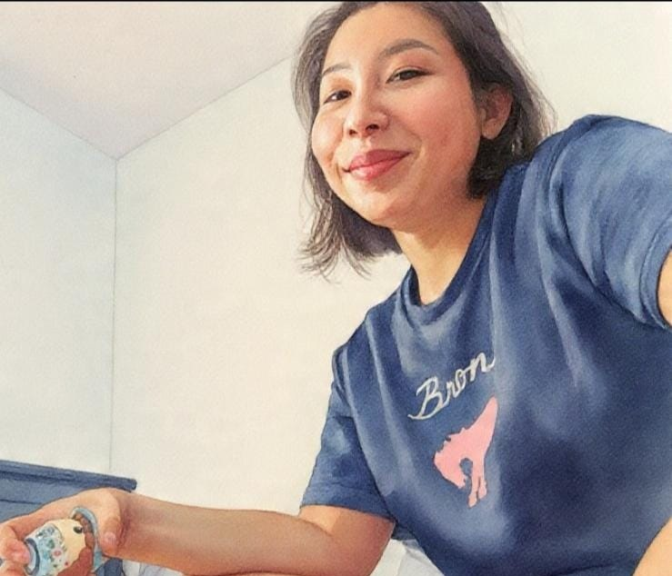

Acerca de mi
¡Hola! mi nombre es Kelly.Me alegra mucho que estes aqui! En este blog podras encontrar parte d mi aprendizaje en el area de programacion enfocada al desarrollo front-endtus Actualmente soy estudiante de Diseño y Desarrollo de Software en el Instituto Certus, disfruto investigar nuevas tecnologías, mejorar mis proyectos. Tengo experiencia trabajando en equipo, coordinando tareas y comunicando ideas técnicas de forma simple. Mi objetivo ahora es incorporarme a un entorno tecnologico donde pueda seguir creciendo desde el primer día y pueda aprender de desarrolladores con más experiencia enfocada en el desarollo backend y frontend. |
 |
Datos del estudiante
| Nombre y apellido | Kelly Alvis Chirinos |
| Edad | 35 años |
| Carrera | Diseño y Desarrollo de Software |
| Instituto | Certus |
| Ciclo | Primer Ciclo |
| Ciudad de procedencia | Cusco |
| Nacionalidad | Peruana |
Formacion academica
|
Cuadro comparativo de formacion academica
| Nivel educativo | Institucion | Año | Estado |
| Secundaria | I.E. Nuestra Sra de Montserrat | 2003 | Concluido |
| Superior | Universidad Privada del Norte | 2018 | Incompleto |
| Superior | Instituto Certus | 2026 | En curso |
Experiencia Laboral
| samsaung | Nero de la 375 E.I.R.L | Frutozys SAC |
| periodo por campana | jornada completa | periodo por campana |
Habilidades personales
|
Conocimientos adquiridos
|